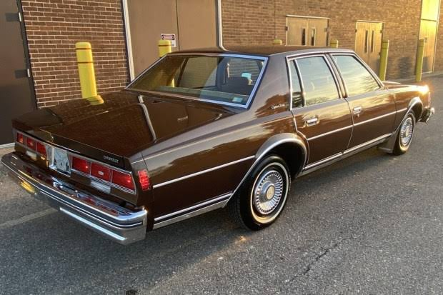
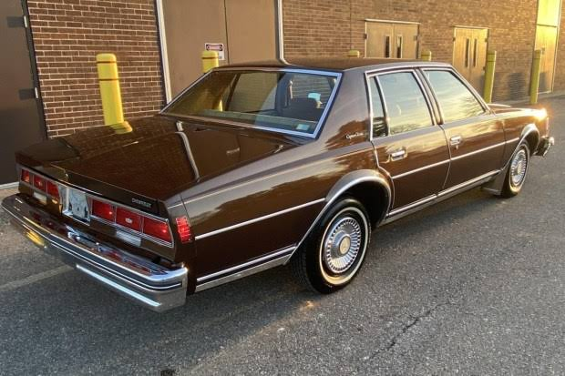

Caprice Classic Sedan
Chevrolet Caprice Classic, 1965'ten 1996'ya kadar üretilmiş, klasik Amerikan sedan araçlarından biridir. Hem lüks hem de pratik özellikleriyle, büyük ve geniş bir iç hacme sahip olan bu araç, zamanın en prestijli modellerinden biri olarak anılmaktadır. Hem şehir içi hem de uzun yol sürüşlerinde mükemmel bir konfor sunar.
Caprice Classic, genellikle büyük bir 5.0 litre V8 motorla donatılmıştır ve bu motor yaklaşık 170 beygir güç üretmektedir. Aracın tasarımı, 1980'ler ve 1990'ların tipik Amerikan sedan çizgilerini taşır. Geniş iç hacmi, konforlu koltukları ve ergonomik tasarımı ile, özellikle uzun yolculuklar için tercih edilmiştir.
Caprice Classic'in önemli özelliklerinden biri, tam boy sedan yapısı ve konfor odaklı tasarımının birleşimidir. Dış tasarımda sade ancak etkileyici bir çizgiye sahip olan araç, geniş bagajı ve uzun aks aralığı ile de dikkat çeker. İçeride ise rahat koltuklar, geniş diz mesafesi ve geniş bir kokpit bulunur.
Caprice Classic Sedan'ın Türkiye'deki fiyatı, aracın nadirliği ve klasik otomobil olması nedeniyle 500.000 TL ile 700.000 TL arasında değişmektedir.
Caprice Classic'in rakipleri arasında Ford LTD, Chrysler New Yorker ve Buick Electra gibi Amerikan sedanları yer almaktadır.
Caprice Classic'in öne çıkan özellikleri:
- Geniş İç Mekan: Konforlu koltuklar ve geniş diz mesafesi.
- V8 Motor: Yüksek performans ve düşük devirde tork.
- Amerikan Sedan Tasarımı: Şık ve sade dış görünüm, geniş bagaj hacmi.
- Konfor: Uzun yolculuklar için ideal iç mekan düzenlemesi.
- Klasik Otomobil: Koleksiyoncular için nadir bulunan bir model.